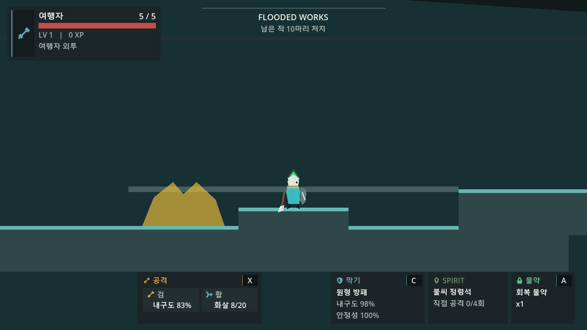
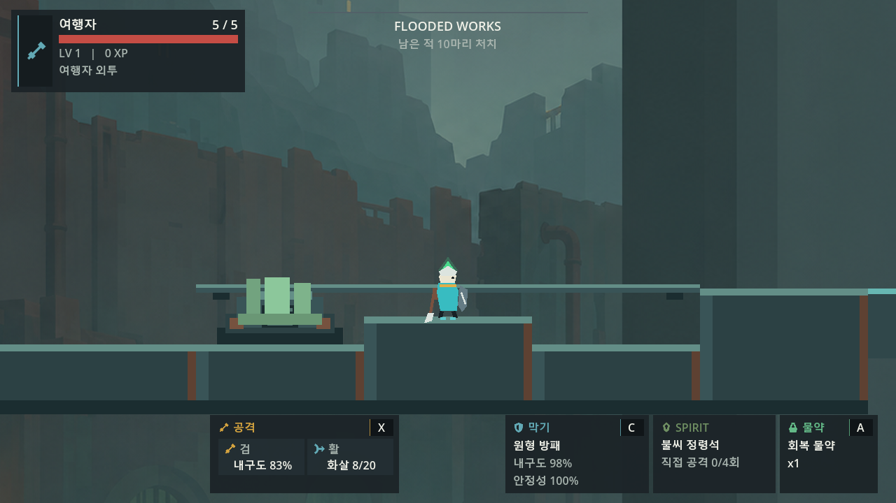
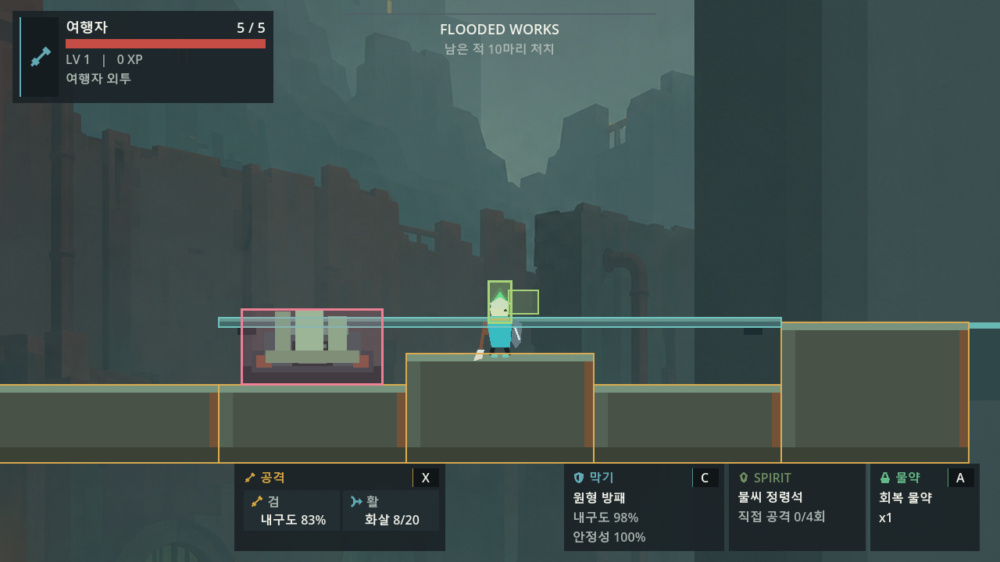

HAZARD · 180 × 96
Timed Poison Vent


180×96 · PIVOT 0,0
BASE.PNG · SAME NODE+ WARNING_OVERLAY.PNG
STATE
사전 경고 · 피해 없음0.70 s
Real room proof
MEASURE → PRODUCE → VALIDATE
현재 authored stage에서 계산한 카메라 이동량만큼 배경을 만들고, 대표 방의 실제 충돌 형상에서 5개 지형 타입을 추출했습니다. 독 vent와 붕괴 발판은 한 base 위에 상태 PNG만 교체합니다.
01 · MEASURED PANORAMA
Flooded Works의 실제 bounds, 최대 viewport, 0.18 scroll scale, 192×128 overscan으로 필요한 합성 크기를 계산합니다. 2048×1536 패널 두 장은 192px을 공유하며, 두 번째 패널의 overlap은 첫 패널 가장자리를 기준으로 정규화되었습니다.
02 · DERIVED TERRAIN FAMILY
임의로 chunk 개수를 정하지 않았습니다. fw_poison_timing의 collision layer와 RectangleShape2D 크기를 묶었고, 중복된 240×100 두 개는 한 타입을 재사용합니다.


03 · RASTER STATE OVERLAYS
아래는 인라인 SVG 시뮬레이션이 아니라 실제 Godot scene이 참조하는 PNG입니다. 상태를 바꿔도 base texture와 local pivot는 변하지 않습니다.
HAZARD · 180 × 96
TERRAIN · 220 × 28


04 · REAL ROOM COMPARISON
같은 player 위치와 HUD에서 baseline, 최종 PNG 적용, collision/debug overlay를 비교합니다. debug 사각형은 최종 지형의 상면과 hazard 범위에 맞고, 별도 validator가 before/after shape와 timing snapshot의 동일성을 확인합니다.


